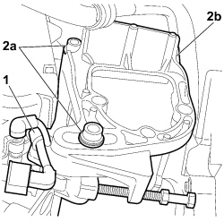

4130B30 POWER STEERING PUMP BRACKET OR SUPPORT - R.R.
- Path
- Procedures > 41 STEERING UNIT > 4130 POWER STEERING > 4130B POWER STEERING HYDRAULIC SYTEM > 4130B30 POWER STEERING PUMP BRACKET OR SUPPORT - R.R.
- Kind
- repair procedure (removal / refitting; the operation number is the code)
- Applies to
- engines: 1.4 8v; all production periods
- Interactive page
- https://sloeber94.github.io/elrnDB-fDbl/en/#/223000144
Applies to: engines: 1.4 8v; all production periods
 Removing
Removing
 Refitting
Refitting- Position the vehicle on the lift.
- Turn the ignition key to the OFF position.
- Disconnect the negative battery terminal.
Description | Connector | |
|---|---|---|
BATTERY |
Op. 4450B04 RIGHT FRONT WHEEL - R.R.
Op. 7055B54 PROTECTION/GUARD UNDER ENGINE - R.R.
Op. 1092C10 POWER STEERING AND/OR SELF-LEVELLING SUSPENSION PUMP DRIVE BELT - R + R
Op. 4130B20 POWER STEERING PUMP - R.R.
1. Unscrew the bolt and disconnect the sensor wiring anchorage collar.
2. Undo the fixing bolts (2a) and remove the power steering bracket (2b) from the vehicle.

Applies to: engines: 1.4 8v; all production periods
Refitting
Removing1. Position the power steering pump mounting bracket (1a) and tighten the fixing bolts (1b) to the recommended torque.
Fastening | Component | dia | Value (daNm) | |
|---|---|---|---|---|
2b | Bolt | POWER STEERING PUMP BRACKET | M8 | - |
2. Position the sensor wiring mounting bracket and tighten the fixing bolt.
Applies to: engines: 1.4 8v; all production periods
Op. 4130B20 POWER STEERING PUMP - R.R.
Op. 1092C10 POWER STEERING AND/OR SELF-LEVELLING SUSPENSION PUMP DRIVE BELT - R + R
Op. 7055B54 PROTECTION/GUARD UNDER ENGINE - R.R.
Op. 4450B04 RIGHT FRONT WHEEL - R.R.
Op. 0010T71 POWER STEERING FLUID CHECK LEVEL AND TOP UP IF NECESSARY
- Connect the negative battery terminal.
Description | Connector | |
|---|---|---|
BATTERY |
- Remove the vehicle from the lift.
Topics linked from this page (6)
- 0010T71 power steering fluid check level and top up if necessary
- 1092C10 power steering and/or self-levelling suspension pump drive belt - r + r
- 4130B20 power steering pump r r
- 4450B04 right front wheel r r
- 7055B54 under-engine guard - r r
- A001 BATTERY